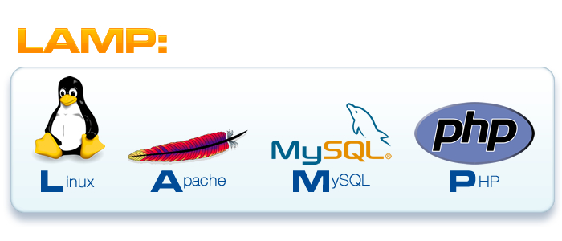

Portal改善計畫
解說展示
網站設計 by HCY /影片來源@ 2014NTU CCSP Expo
為什麼要這麼做?
整合資訊，練習大數據Json頗析與應用。
分成一個主軸三個面向
主軸:資訊整合
什麼是資訊整合 以JSON為例
JSON（JavaScript Object Notation）輕量級的資料交換語言，以文字為基礎，且易於讓人閱讀。儘管JSON是Javascript的一個子集，但JSON是獨立於語言的文字格式，並且採用了類似於C語言家族的一些習慣。
JSON的優點
JSON長這樣
{
"orderID": 12345,
"shopperName": "John Smith",
"shopperEmail": "johnsmith@example.com",
"contents": [
{
"productID": 34,
"productName": "SuperWidget",
"quantity": 1
},
{
"productID": 56,
"productName": "WonderWidget",
"quantity": 3
}
],
"orderCompleted": true
}
怎麼與校務系統連線?
我才不會寫在這裡昭告天下XDDDD
JAVA FX
Slides can be nested inside of each other.
Use the Space key to navigate through all slides.
Basement Level 1
Nested slides are useful for adding additional detail underneath a high level horizontal slide.
Scanner sc = new Scanner(System.in);
//prompt the user to enter the right number
System.out.println("Input the first number.");
String n1 = sc.nextLine();
//use BigDecimal to deal number
BigDecimal number1 = new BigDecimal(n1);
System.out.println("Input the second number.");
String n2 = sc.nextLine();
//use BigDecimal to deal number
BigDecimal number2 = new BigDecimal(n2);
Basement Level 2
That's it, time to go back up.
Basement Level 3
That's it, time to go back up.
Slides
Not a coder? Not a problem. There's a fully-featured visual editor for authoring these, try it out at http://slides.com.
HTML/CSS/JS/PHP/MySQL
LAMP
BOOTSTRAP

Magento
未來展望
加入.....


Fragments
Hit the next arrow...
... to step through ...
... a fragmented slide.